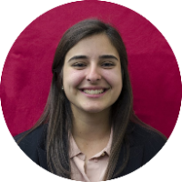

|  | Carole WolfeMechanical Engineer I am a recent graduate from the University of Central Florida with a B.S. in Mechanical Engineering. I am currently a project managment intern supporting the technical team at Acomb Ostendorf & Associates, LLC seeking full time employment as a Project Engineer or Associate Project Management. I am a brother of Theta Tau of the Rho Gamma chapter, a professional engineering fraternity. |
I enjoy riding my bicycle, reading and creating artsy things.
|
|